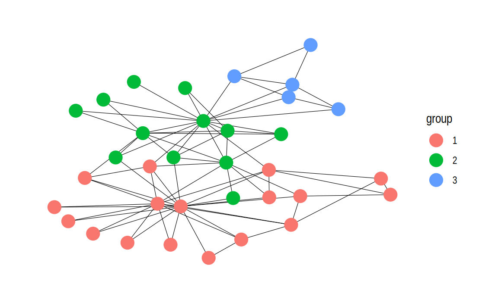
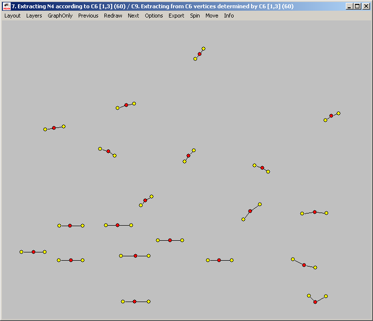
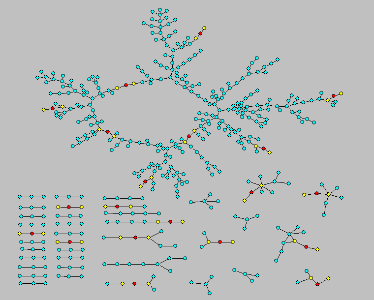
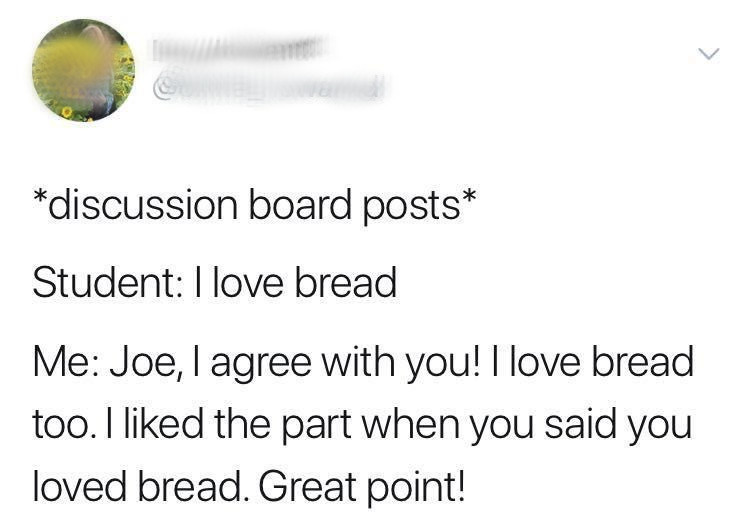
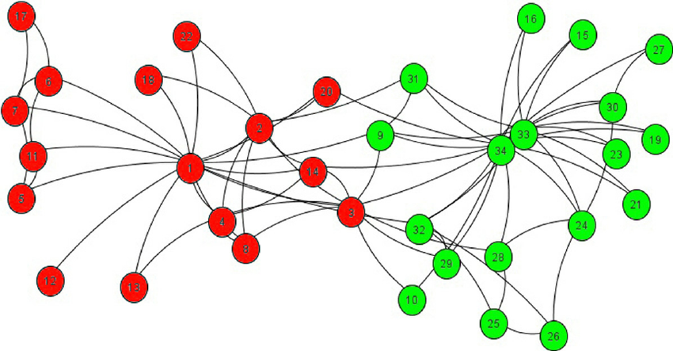

Welcome to COM 411: Communication and Social Networks!
About me


Dad Joke
Why did the nearsighted man fall in the well?
He couldn’t see that well!
Introductions
- Name
- Year
- Major
- Closest connection to a famous person
Small World Activity
- Find someone in the room you don’t know
- Figure out someone you both know
What is Communication and Social Networks?


NOT THIS KIND OF SOCIAL NETWORK!
Who you are connected to can be more important than who you are


Who you are connected to can be more important than who you are
![Diagram showing overlapping social bubbles with groups of people represented by icons inside colored circles. One person is highlighted in yellow with a speech bubble above reading THE BUBBLE YOU THINK YOU HAVE. Several circles overlap, illustrating how social connections extend beyond immediate contacts. Red virus icons appear in some circles, indicating potential spread of disease. At the bottom, text reads THE BUBBLE YOU ACTUALLY HAVE. The image is from the General Building Contractors Association. The tone is cautionary, emphasizing how our social connections are larger and more interconnected than we might assume.](./images/covid_bubble.png)
Goals
- Understand the foundations of network theory and analysis
- Critically read social network studies
- Learn how social networks relate to your own interests
- Gain a basic understanding of gathering and analyzing network data in R
How we reach those goals
About the class
- Building a learning community
- Discussions vs. lectures
- Resolving confusion
- Project-based
Grading
- Normal grading has some negative unintended consequences

- How can we build a learning community?
Grading
- I’m interested in teaching, not assessing
- Goal is to build structures that encourage learning and accountability
- Assignments will be turned in on Brightspace and/or discussed in class
- I will provide general feedback
- 3 times during the semester you will turn in reflection pieces
- If I disagree I will reach out
Class Meetings
- Most content is asynchronous
- Readings + Video lectures
- Tuesdays
- Time discussing + reviewing concepts and homework
- Random cold calling
- Thursdays
- Activities
- R Labs
- Co-working / Office Hours
Class meetings
- I will work hard to make our classes valuable
- Do the same; be prepared, open, and engaged
- Class discussions are a fundamental part of the class and I expect you to be at every class
- No laptops or phones unless we are doing programming or other activities that require them
Assignments
- Homework
- Social network concepts
- Programming practice
- Reading
- 3-2-1 on Brightspace
- 3 things you learned / connections made
- 2 questions / things that are still confusing
- 1 discussion question, posted on Discord
- 3-2-1 due Mondays at noon
- 3-2-1 on Brightspace
Readings
- Academic papers
- Linked from site
- A few on Brightspace (I will make this clear)
- Textbooks
- Linked from site
- Networks, Crowds and Markets
- Introduction to social network methods
Programming
- You will understand what this means! :)
Exam
- One exam
- Goal is to encourage self-accountability
Final Project
Options:
- Group project: network-based intervention (e.g., spreading an idea on campus)
- (Group?) research project: analysis of network data
- “Pitch” to an organization about how what you have learned could be used to help their organization
Resources
Discord
- Conversation and questions
- Help
- In general, ask publicly so others can answer / see the answer
Course Website
- Syllabus
- Schedule
- Lecture videos and slides
- Links to readings
- Links to assignments
- Let me know what’s broken
Brightspace
- Some readings
- Submit assignments
Office Hours
- Tuesdays, 1-3
- Also open to meeting virtually or at other times
AI Tools
- AI is incredible
- It can be an amazing tutor
- It can provide personalized feedback
- It can help with research and data analysis
(Tentative) AI Policy
- Work must be your work
- You write your assignments
- Ask AI for help with understanding concepts or generating ideas, but not for writing your assignments.
- You can use AI to understand topics and readings.
- Thoughts?
Please be vocal
- I will solicit feedback as part of reflections
- Let me know what is and isn’t working
Assignments
- Read the syllabus
- Fill out the reflection on Brightspace
- This Thursday will be a (fun!) synchronous activity
- Bring your computer, if possible!
- Make sure you are signed up on Discord
Social networks are much more interesting!
